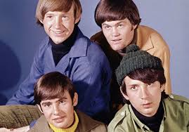

The Monkees are an American rock and pop band originally active between 1966 and 1971, with reunion albums and tours in the decades that followed. Their original line-up consisted of the American actor/musicians Micky Dolenz, Michael Nesmith, and Peter Tork with English actor/singer Davy Jones. The group was conceived in 1965 by television producers Bob Rafelson and Bert Schneider specifically for the situation comedy series The Monkees, which aired from 1966 to 1968. The band's music was initially supervised by record producer Don Kirshner, backed by the songwriting duo of Tommy Boyce and Bobby Hart.
The four actor/musicians were initially allowed only limited roles in the recording studio for the first few months of their five-year career as "the Monkees". This was due in part to the amount of time required to film the television series. Nonetheless, Nesmith composed and produced some songs from the beginning, and Tork contributed limited guitar work on the sessions produced by Nesmith. All four contributed lead vocals to various tracks. They eventually fought for the right to collectively supervise all musical output under the band's name, acting as musicians, singers, songwriters, and producers.